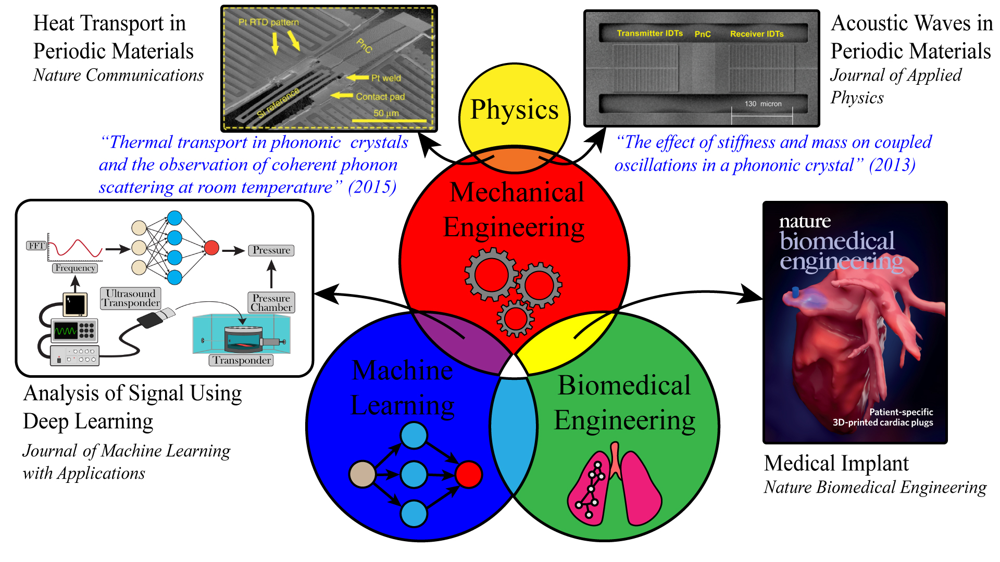

|
● Overview of Multi/Interdisciplinary Research Dr. Alaie's research involves multiple disciplines. This approach brings together a wealth of knowledge from various fields to tackle complex problems and innovate with new solutions. ● Sponsored Research NIH-NIBIB (R21 Mechanism, Trailblazer), PI. 2021-2025 Film-like Acoustic Microresonators for Wireless Monitoring of Intracardiac Pressure using Ultrasound. ● Public Repositories To be added |